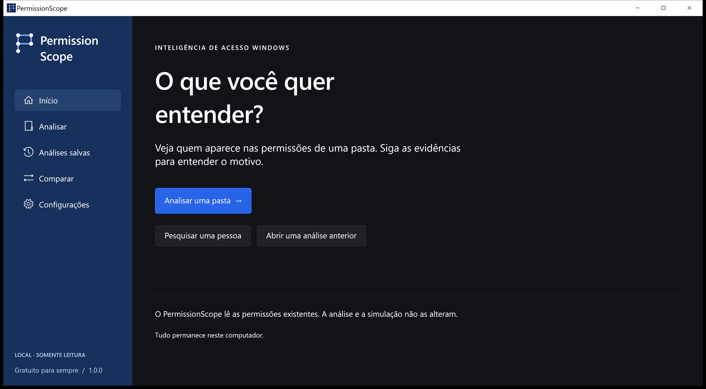

Who
Inspect the accounts and groups in a folder's access rules. Evaluate one selected Windows identity — not an invented count of everyone who could have access.
Windows access intelligence
Read the permissions. Follow the evidence. Know what changed — without sending your environment to a cloud service.
Free forever · Local · No account

Calculated. Not guessed.
A permission answer is only useful when you can inspect what supports it. Access Path keeps that evidence attached to the result.
Inspect the accounts and groups in a folder's access rules. Evaluate one selected Windows identity — not an invented count of everyone who could have access.
Follow contributing permission entries, token membership and proven group relationships. Open the original security descriptor when you need the raw evidence.
Save local observations and compare descriptors and evaluated access. A resource absent from a later scan is not automatically called deleted.
Remove a permission entry in memory and recalculate. Applying a change is separate: local files only, explicit confirmation, a journal and verified rollback.
Technical trust
Windows Authz calculates discretionary access. A remote token, a conditional rule or an unproven inheritance origin is not filled in with a guess.
An allowed permission does not guarantee a successful file open. Encryption, locks, integrity policies and other Windows restrictions can still apply. Remote results are deliberately conservative.
Read the supported scope →PermissionScope for Windows
Windows 10 1809 or later. Native WinUI 3. The complete packages include the .NET and Windows App SDK runtimes.
The installers are currently unsigned. Windows may display an unknown-publisher warning. Check the release hashes before use.
No account, advertising, application telemetry or paid tier. Snapshots stay on your computer. Windows contacts only the network resources needed for your requested analysis. Review reports before sharing: paths and account names can be sensitive.
This site has no analytics or external fonts. GitHub, as the hosting and download provider, processes normal web requests under its own policies.
Privacy details →